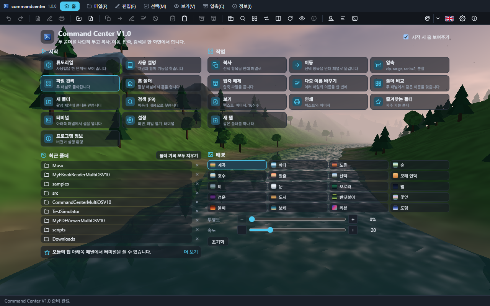
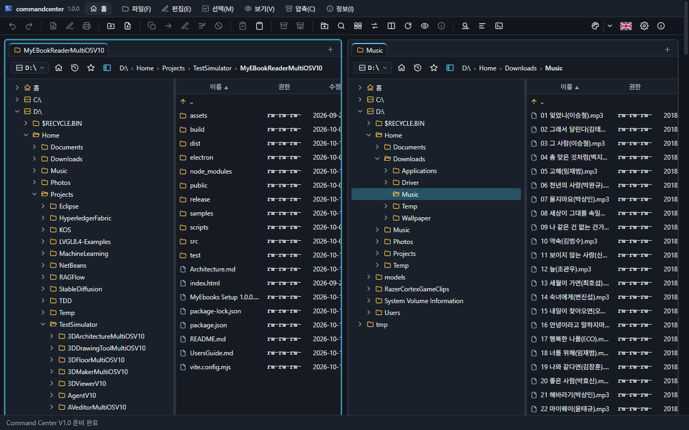
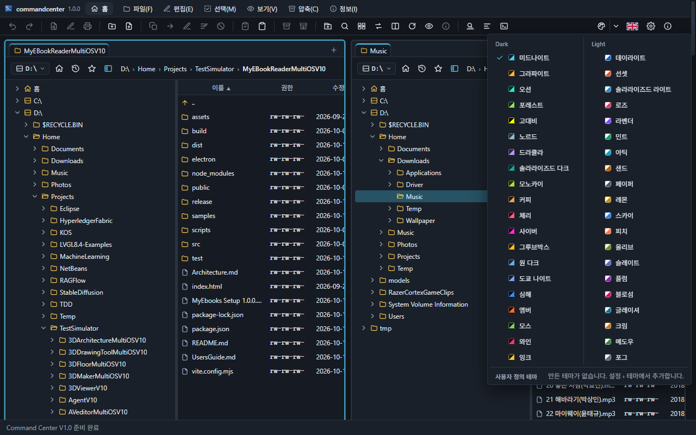
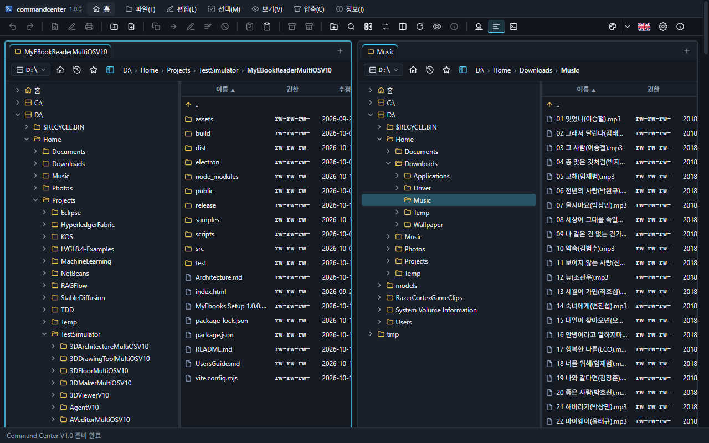

두 폴더를 나란히 두고 복사, 이동, 압축, 검색을 하는 파일 관리자입니다. 찾기 칸에 단어 일부를 넣으면 그 말이 있는 절만 남습니다. 그림은 한국어 화면입니다. A file manager with two folders side by side: copy, move, archive and search. Type part of a word to keep only the sections that mention it. The pictures show the Korean screen.
맞는 절이 없습니다. No section matches.
시작 화면Start screen

메뉴바에서 프로그램 아이콘과 이름 바로 오른쪽의 홈이 이 화면을 엽니다. 메인 창에는 따로 제목줄이 없습니다. 데스크톱에서는 같은 줄 오른쪽에 최소화, 최대화, 닫기가 있고, 메뉴 사이 빈 곳을 끌어 창을 옮깁니다.
- 시작하기. 튜토리얼은 화면을 짚어 가며 안내합니다. 사용 설명은 이 문서입니다. 파일 관리는 두 패널로 돌아갑니다. 홈 폴더, 새 폴더, 검색, 터미널, 설정, 프로그램 정보도 여기서 바로 엽니다.
- 작업. 복사, 이동, 압축, 압축 해제, 이름 바꾸기, 폴더 비교, 보기, 인쇄, 즐겨찾기, 새 탭. 누르면 패널로 돌아가 그 명령을 실행합니다.
- 최근 폴더. 두 패널에서 연 폴더가 10개까지 보입니다. 이름을 누르면 활성 패널에서 열리고, × 로 하나만 지우며, 폴더 기록 모두 지우기로 비웁니다. 아래 팁은 하루에 하나씩 바뀝니다.
- 배경. 계곡, 바다, 노을, 숲, 호수, 일출, 산맥, 모래 언덕, 비, 눈, 오로라, 별, 성운, 도시, 반딧불이, 꽃잎, 불씨, 보케, 리본, 도형. 스무 가지 3D 풍경이 스스로 움직입니다. 투명도는 숫자와 %로 보이며 올리면 테마 색이 비칩니다. 속도는 카메라와 물체와 하늘의 빠르기이고, 0이면 멈춥니다. 초기화는 투명도 0, 속도 20입니다. 시작 시 홈 보여주기를 끄면 다음 실행부터 파일 패널로 시작합니다. 같은 설정은 설정의 시작 화면 탭에도 있습니다.
Home, just to the right of the icon and name, opens this page. The main window has no separate title bar. On the desktop, minimize, maximize and close sit at the right of that row, and an empty part of the row drags the window.
- Start. Tutorial points at the screen. Guide is this document. File manager returns to the two panels. Home folder, new folder, search, terminal, settings and about open from here too.
- Tasks. Copy, move, compress, extract, rename, compare folders, view, print, favourites, new tab. Each one returns to the panels and runs that command.
- Recent folders. Up to ten folders opened in either panel. A name opens it in the active panel, × drops one, and clear removes the list. The tip below changes once a day.
- Background. Valley, ocean, dusk, forest, lake, sunrise, mountains, dunes, rain, snow, aurora, stars, nebula, city, fireflies, petals, embers, bokeh, ribbons, shapes. Twenty 3D landscapes move on their own. Transparency is a number and %. Raising it lets the theme colour show through. Speed is how fast the camera, the objects and the sky move. Speed 0 holds the picture still. Reset returns transparency 0 and speed 20. Turning off Show Home at startup opens the file panels next time. The same controls are on the Start screen tab in Settings.
화면The window

테두리가 강조된 쪽이 활성 패널입니다. 패널을 클릭하거나 Tab으로 바꿉니다. 메뉴, 툴바, 단축키는 활성 패널에 적용됩니다. 가운데 선을 끌면 너비가 바뀌고(20~80%), 더블클릭하면 반반이 됩니다. 툴바의 화면 분할 또는 보기 메뉴로 좌우와 상하를 바꿉니다. 창 우측 하단 마커를 끌면 크기가 바뀝니다. 최소 크기는 툴바 버튼이 모두 보이는 폭입니다.
각 패널 위에 탭이 있습니다. Ctrl+T, 툴바, 탭 줄의 +, 빈 곳 더블클릭이 현재 폴더의 탭을 하나 더 만듭니다. 클릭으로 전환하고, × · 가운데 클릭 · Ctrl+W로 닫습니다. 마지막 탭은 남습니다. Ctrl+Tab과 Ctrl+Shift+Tab으로 순환합니다. 우클릭으로 새 탭, 반대 패널에 탭으로 열기, 닫기, 다른 탭 모두 닫기. 탭은 다음 실행 때 돌아옵니다.
경로 줄에는 드라이브(종류, 이름, 여유와 전체 용량), 홈, 폴더 기록, 즐겨찾기, 폴더 트리, 빵부스러기가 있습니다. 목록 열은 이름, 권한, 수정일, 종류, 크기입니다. 머리글을 누르면 정렬되고, 폴더가 먼저이며 ..은 맨 위입니다. 숨김 파일은 흐리게 보입니다. 폴더가 바뀌면 자동으로 새로고침합니다. 데스크톱은 파일 감시, 웹은 약 2초마다 확인합니다. 패널 아래에는 폴더와 파일 수, 합계 크기, 선택하면 그 수와 크기가 나옵니다.
펑션 키 줄은 F3 보기, F4 편집, F5 복사, F6 이동, F7 새 폴더, F8 삭제, Alt+F4 종료입니다. 보기 메뉴에서 숨길 수 있습니다. 맨 아래 상태 표시줄은 마지막 메시지를 보여 주고, 긴 글은 말줄임으로 잘리며 마우스를 올리면 전체가 나옵니다. 상태 표시줄에는 스크롤 바가 없습니다. 창이 좁으면 그 위의 내용만 가로로 스크롤됩니다.
The panel with the stronger border is active. Click a panel or press Tab. Menus, the toolbar and shortcuts apply to the active panel. Drag the divider to change the width (20–80%). Double-click it for half and half. The split button, or the View menu, switches side by side and one above the other. The marker at the bottom-right resizes the window. The minimum width is whatever keeps every toolbar button visible.
Each panel has tabs. Ctrl+T, the toolbar, + on the tab row, or a double-click on empty space opens another tab on the current folder. Click to switch. ×, middle-click or Ctrl+W closes one. The last tab stays. Ctrl+Tab and Ctrl+Shift+Tab cycle. The right-click menu opens a new tab, opens the folder as a tab on the other panel, closes this tab, or closes the others. Tabs come back next time.
The path row has drives (kind, name, free and total space), home, folder history, favourites, the folder tree and breadcrumbs. Columns are name, permissions, modified, type and size. A column header sorts. Folders come first and .. stays at the top. Hidden files are dimmed. A changed folder refreshes on its own: the desktop watches the folder, the web version checks about every two seconds. Under the list: folder and file counts, total size, and when something is selected, that count and size.
The function-key row is F3 view, F4 edit, F5 copy, F6 move, F7 new folder, F8 delete, Alt+F4 quit. View can hide it. The status bar at the bottom shows the latest message. A long message is clipped, and the pointer shows the rest. The status bar itself does not scroll. A narrow window scrolls the area above it.
툴바와 테마Toolbar and themes

툴바 버튼은 아이콘만 있습니다. 마우스를 올리면 설명과 단축키가 나옵니다. 선택한 항목이 없으면 관련 버튼이 흐립니다. 숨김 파일, 로그, 빠른 검색, 터미널은 켜져 있으면 강조됩니다.
왼쪽부터 실행 취소, 다시 실행, 보기, 편집, 인쇄, 새 폴더, 새 파일, 복사, 이동, 이름 바꾸기, 다중 이름 바꾸기, 삭제, 휴지통(데스크톱), 클립보드 복사, 붙여넣기, 압축, 압축 해제, 새 탭, 검색, 폴더 비교, 패널 바꾸기, 화면 분할, 새로고침, 숨김 파일, 파일 정보, 빠른 검색, 로그, 터미널입니다. 오른쪽 끝은 테마, 언어, 설정, 프로그램 정보입니다. 설정과 프로그램 정보 사이에는 구분선이 없습니다.
테마 버튼의 왼쪽은 다음 테마로 넘어가고, ▾ 가 목록을 엽니다. 어두운 테마 20개와 밝은 테마 20개가 각각 한 열입니다. 같은 종류가 여러 열로 나뉘지 않습니다. 가장 아래 한 줄은 사용자 정의 테마입니다. 만든 테마가 없으면 설정에서 추가하라는 안내가 그 줄에 있습니다. 고르면 바로 적용됩니다. 데스크톱에서는 목록이 별도의 창으로 열려 앱 창 아래를 벗어나도 잘리지 않습니다. 브라우저에서는 페이지 안에 그려집니다.
어두운 테마는 미드나이트, 그라파이트, 오션, 포레스트, 고대비, 노르드, 드라큘라, 솔라라이즈드 다크, 모노카이, 커피, 체리, 사이버, 그루브박스, 원 다크, 도쿄 나이트, 심해, 엠버, 모스, 와인, 잉크입니다. 밝은 테마는 데이라이트, 선셋, 솔라라이즈드 라이트, 로즈, 라벤더, 민트, 아틱, 샌드, 페이퍼, 레몬, 스카이, 피치, 올리브, 슬레이트, 플럼, 블로섬, 글레이셔, 크림, 메도우, 포그입니다.
언어 버튼은 바꿀 언어의 국기입니다. 한국어와 English가 메뉴, 툴팁, 메시지 전체에 적용됩니다.
Toolbar buttons are icons. The pointer shows what each one does, and the shortcut. With nothing selected, the related buttons are dimmed. Hidden files, log, quick search and terminal are marked while they are on.
From the left: undo, redo, view, edit, print, new folder, new file, copy, move, rename, multi-rename, delete, trash (desktop), clipboard copy, paste, compress, extract, new tab, search, compare folders, swap panels, split, refresh, hidden files, file info, quick search, log, terminal. At the right: theme, language, settings, about. There is no divider between settings and about.
The left half of the theme button goes to the next theme. The ▾ opens the list. Twenty dark themes are one column and twenty light themes are the other. A kind is not split across columns. The bottom line is Custom themes, or a hint to add one in Settings when the line is empty. Choosing one applies it at once. On the desktop the list is its own window, so it can hang below the app window. In a browser it is drawn inside the page.
Dark: Midnight, Graphite, Ocean, Forest, High contrast, Nord, Dracula, Solarized dark, Monokai, Coffee, Cherry, Cyber, Gruvbox, One dark, Tokyo night, Abyss, Amber, Moss, Wine, Ink. Light: Daylight, Sunset, Solarized light, Rose, Lavender, Mint, Arctic, Sand, Paper, Lemon, Sky, Peach, Olive, Slate, Plum, Blossom, Glacier, Cream, Meadow, Fog.
The language button shows the flag of the language you would switch to. Korean and English apply to menus, tips and messages.
이동Moving around
| 방법 | 동작 |
|---|---|
| 더블클릭, Enter | 폴더로 들어갑니다. 이미지·동영상·오디오는 미리 보기(설정이 켜져 있을 때). 그 밖은 연결된 프로그램입니다. |
.., Backspace, Ctrl+PgUp | 상위 폴더 |
| Ctrl+\ | 드라이브 루트 |
| 드라이브 버튼, Alt+F1, Alt+F2 | 왼쪽 또는 오른쪽 패널의 드라이브 목록 |
| F1 | 사용 설명 창 |
| 홈 | 홈 폴더 |
| 빵부스러기 | 그 위치로 바로 이동 |
| 폴더 트리 | 보기 메뉴 또는 경로 줄의 트리 버튼. 패널마다 따로 열리고 폭을 조절합니다. 홈, 드라이브, /, /tmp, 마운트가 뿌리이고 현재 폴더까지 펼쳐집니다. 클릭은 이동, ▸ 또는 더블클릭은 펼침과 접기입니다. |
| 폴더 기록, Alt+↓ | 그 패널이 본 최근 30개 |
| 즐겨찾기, Ctrl+D | 현재 폴더를 넣거나 빼고, 양쪽 패널이 공유합니다 |
| Ctrl+U | 두 패널의 폴더와 정렬을 바꿉니다 |
| Ctrl+←, Ctrl+→ | 커서의 폴더(폴더가 아니면 현재 폴더)를 왼쪽 또는 오른쪽에 엽니다 |
| 글자 입력 | 그 글자로 시작하는 항목으로 커서가 갑니다. 1.2초 뒤 지워지고 Backspace로 지웁니다 |
| Ctrl+R | 새로고침 |
| How | What it does |
|---|---|
| Double-click, Enter | Enters a folder. Images, video and audio open in the preview when that setting is on. Everything else uses its program. |
.., Backspace, Ctrl+PgUp | Parent folder |
| Ctrl+\ | Drive root |
| Drive button, Alt+F1, Alt+F2 | Drive list for the left or the right panel |
| F1 | Guide window |
| Home | Home folder |
| Breadcrumb | Jump to that place |
| Folder tree | View menu or the tree button on the path row. Each panel has its own, and the width can be dragged. Roots are home, drives, /, /tmp and mounts, opened down to the current folder. A click moves. ▸ or a double-click expands and collapses. |
| History, Alt+↓ | The last 30 folders that panel visited |
| Favourites, Ctrl+D | Add or remove the current folder. Both panels share the list. |
| Ctrl+U | Swap the two panels, including sort |
| Ctrl+←, Ctrl+→ | Open the folder under the cursor (or the current folder) on the left or the right |
| Typing | The cursor jumps to a name that starts with those letters. It clears after 1.2 seconds, or with Backspace. |
| Ctrl+R | Refresh |
선택Selection
한 번 클릭은 선택만 합니다. Ctrl+클릭은 하나씩 토글하고, Shift+클릭과 Shift+방향키는 범위입니다. Insert는 토글한 뒤 한 칸 아래로 가고, Space는 토글합니다. 폴더에서 Space를 누르면 하위 크기를 계산해 <DIR> 대신 보여 줍니다.
| 키 | 동작 |
|---|---|
| Num +, Num − | 패턴으로 선택하거나 해제합니다. *.txt;*.md 형태이고, 일반 키보드의 + − 도 됩니다. 마지막 패턴을 기억합니다. |
| Num * | 선택을 뒤집습니다 |
| Ctrl+A, Ctrl+Num − | 모두 선택, 모두 해제 |
| Alt+Num +, Alt+Num − | 커서 파일과 같은 확장자를 선택하거나 해제 |
| Shift+F2 | 폴더 비교. 상대 패널에 없거나, 크기가 다르거나, 2초 이상 더 새로운 파일을 선택합니다. 개수는 상태 표시줄에 나옵니다. |
A single click only selects. Ctrl+click toggles one item. Shift+click and Shift+arrows select a range. Insert toggles and moves down one. Space toggles. Space on a folder measures what is inside and shows that size instead of <DIR>.
| Key | What it does |
|---|---|
| Num +, Num − | Select or unselect by pattern, such as *.txt;*.md. The + and − on the main keyboard work too. The last pattern is remembered. |
| Num * | Invert the selection |
| Ctrl+A, Ctrl+Num − | Select all, unselect all |
| Alt+Num +, Alt+Num − | Select or unselect the same extension as the file under the cursor |
| Shift+F2 | Compare folders. Selects names that are missing on the other side, a different size, or newer by at least two seconds. The counts go on the status bar. |
파일 작업File operations
| 작업 | 방법 |
|---|---|
| 복사, 이동 | F5, F6. 반대 패널로 갑니다. 같은 이름이 있으면 덮어쓰기, 건너뛰기, 취소와 이후 항목에도 적용을 묻습니다. 폴더는 합쳐집니다. 같은 드라이브의 이동은 즉시이고, 다른 드라이브는 복사한 뒤 지웁니다. |
| 새 폴더, 새 파일 | F7, Shift+F4. 파일은 확장자 앞부분이 선택된 채 열립니다. |
| 이름 바꾸기 | F2, Shift+F6. Windows에서는 대소문자만 바꾸는 것도 됩니다. |
| 삭제 | F8, Delete. 확인 후 영구 삭제입니다. 설정에서 확인을 끌 수 있습니다. |
| 휴지통 | 우클릭과 툴바. 데스크톱의 Windows, macOS, Linux. 웹은 Linux와 macOS 서버만. |
| 클립보드 | Ctrl+C, Ctrl+V. file:// 목록으로 복사하고, 탐색기나 Finder에서 복사한 경로도 붙여 넣습니다. |
| 끌어 놓기 | 반대 패널, 폴더 행, .. 에 놓으면 복사입니다. Shift를 누른 채 놓으면 이동합니다. 밖에서 안으로 놓으면 복사되고, 웹은 서버로 업로드하며 폴더 구조를 유지합니다. 안에서 밖으로 끌면 데스크톱은 네이티브 끌기이고, 웹은 파일 하나를 받습니다. |
| 열기 | Enter, 더블클릭. 분할 압축은 자동으로 합쳐 풉니다. 웹에서 다른 컴퓨터의 연결 프로그램으로 열려면 서버에 --allow-open 이 필요합니다. |
긴 작업은 진행률 창에 현재 항목, 퍼센트, 취소가 있습니다. 작업 중에는 자동 새로고침이 잠시 멈춥니다. 텍스트 파일을 더블클릭했을 때의 방법은 설정 › 파일 열기에서 연결 프로그램, 내장 뷰어, 내장 편집기, 지정한 프로그램 중 하나입니다.
| Operation | How |
|---|---|
| Copy, move | F5 and F6, to the other panel. The same name asks overwrite, skip or cancel, and whether to apply that to the rest. Folders merge. A move on the same drive is immediate. Across drives it copies and then deletes. |
| New folder, new file | F7 and Shift+F4. A new file opens with the part before the extension selected. |
| Rename | F2 and Shift+F6. On Windows a change of case alone is allowed. |
| Delete | F8 and Delete. After confirmation it is permanent. Confirmation can be turned off in Settings. |
| Trash | The context menu and the toolbar. Desktop Windows, macOS and Linux. On the web, only a Linux or macOS server. |
| Clipboard | Ctrl+C and Ctrl+V. Copies a list of file:// addresses, and pastes paths copied from Explorer or Finder. |
| Drag and drop | Dropping on the other panel, a folder row or .. copies. Shift drops as a move. A drop from outside copies in. On the web that uploads to the server and keeps the folder shape. A drag outward is a native drag on the desktop, and a single-file download on the web. |
| Open | Enter and double-click. A split archive is joined and extracted. Opening with the associated program on another computer needs --allow-open on the server. |
A long job shows the current item, a percent and Cancel. Automatic refresh pauses while it runs. How a double-clicked text file opens is set under Settings › Opening files: the associated program, the built-in viewer, the built-in editor, or a program you name.
실행 취소Undo
Ctrl+Z와 Ctrl+Y(Ctrl+Shift+Z), 툴바의 ↶ ↷, 편집 메뉴입니다. 툴팁과 상태 표시줄에 되돌릴 작업이 나옵니다. 최근 50개까지이며, 개수는 설정에서 바꿉니다.
되돌릴 수 있는 것은 새 폴더, 새 파일, 이름 바꾸기, 다중 이름 바꾸기, 복사, 붙여넣기, 이동, 압축, 압축 해제입니다. 복사·압축·해제를 되돌리면 그 작업이 만든 항목만 영구 삭제합니다. 삭제 전에 확인이 켜져 있으면 먼저 묻습니다. 새 폴더와 새 파일은 비어 있으면 바로 지우고, 내용이 생겼으면 확인합니다. 덮어쓰기와 합쳐진 항목, 영구 삭제, 휴지통 이동은 되돌릴 수 없고 다시 실행 목록만 비웁니다. 되돌리기가 실패하면 그 항목은 목록에서 빠지고 오류가 뜹니다.
Ctrl+Z and Ctrl+Y (Ctrl+Shift+Z), the ↶ ↷ toolbar buttons, and the Edit menu. The tip and the status bar name the operation. The last 50 are kept. Settings can change that number.
Undo covers a new folder, a new file, rename, multi-rename, copy, paste, move, compress and extract. Undoing a copy, archive or extract permanently deletes only what that operation created. If confirm-before-delete is on, it asks first. A new folder or file is removed at once when empty, and confirmed when it has gained contents. Overwrites, merges, permanent deletes and moves to the trash cannot be undone. They only clear the redo list. A failed undo drops that entry and shows the error.
다중 이름 바꾸기Multi-rename
Ctrl+M. 선택한 이름의 마스크, 확장자 마스크, 찾기와 바꾸기, 카운터, 대소문자를 한꺼번에 적용합니다. 별도 창이며, 이미 열려 있으면 그 창이 앞으로 옵니다.
| 자리 | 뜻 |
|---|---|
[N] | 확장자를 뺀 이름 전체 |
[N2-5] [N3-] [N4] | 2~5번째 글자, 3번째부터 끝, 4번째 글자 하나 |
[E] | 확장자 |
[C] | 카운터. 시작, 증가, 자릿수 |
[P] | 상위 폴더 이름 |
찾기와 바꾸기는 일반 문자열 또는 정규식이고, 대소문자를 무시할 수 있습니다. 대소문자는 그대로, 소문자, 대문자, 첫 글자만, 단어마다 첫 글자입니다. 미리보기에 기존 이름과 새 이름이 바로 나오고, 바뀌는 항목이 강조됩니다. 중복되거나 잘못된 이름이 있으면 시작이 잠깁니다. 실제 변경은 임시 이름을 거치므로 a와 b를 서로 바꿀 수 있고, 실패하면 되돌립니다. 전체는 실행 취소 한 번입니다.
Ctrl+M applies a name mask, an extension mask, find and replace, a counter and a case rule to the selection at once. It is its own window, and a second press brings that window forward.
| Token | Meaning |
|---|---|
[N] | The whole name without the extension |
[N2-5] [N3-] [N4] | Characters 2–5, from the 3rd to the end, the 4th character |
[E] | The extension |
[C] | A counter: start, step, digits |
[P] | The parent folder's name |
Find and replace is plain text or a regular expression, with an option to ignore case. Case can stay, become lower, upper, first letter, or each word. The preview shows old and new names at once and marks the ones that change. A duplicate or an invalid name locks Start. The rename goes through a temporary name, so a and b can trade places, and a failure rolls back. The whole run is one undo.
보기, 편집, 미리 보기, 인쇄, 파일 정보View, edit, preview, print, file info
보기(F3), 편집(F4), 미리 보기, 파일 정보(Alt+Enter), 다중 이름 바꾸기, 검색(F9), 설정은 별도 창입니다. 종류마다 창은 하나이고, 다시 누르면 그 창이 앞으로 오며 새 파일을 받습니다. 편집기에 저장하지 않은 변경이 있으면 먼저 묻습니다. 위치와 크기는 종류별로 기억되고, 프로그램을 끝내면 함께 닫힙니다. 크기 조절이 되는 창에는 우측 하단 마커가 있습니다. 설정과 프로그램 정보는 내용에 맞는 크기로 바로 열리고 크기를 바꾸지 않습니다. 설정 › 패널에서 별도 창을 끄면 앱 안 대화상자로 열립니다. 웹은 브라우저 팝업이라 팝업을 허용해야 합니다.
뷰어 (F3)
텍스트는 UTF-8, BOM, UTF-16, Latin-1을 가려 내고 줄 수와 크기를 보여 줍니다. Ctrl+W는 줄 바꿈, Ctrl+H는 16진수, Ctrl+P는 지금 보이는 내용의 인쇄, F4는 편집기입니다. 8MB를 넘으면 앞부분만 봅니다. 소스 파일 23종은 예약어, 문자열, 주석, 숫자, 타입, 호출 이름을 색으로 구분합니다. .txt와 .log, 16진수는 그대로입니다. 색은 400KB까지이고 설정에서 끌 수 있습니다. 이미지는 png, jpg, gif, webp, bmp, svg, ico, avif이고 창 맞춤과 원본 크기, 24MB까지입니다. 이진 파일은 16진수 덤프이며 256KB까지입니다.
편집기 (F4)
고정폭으로 고치고 Tab이 유지됩니다. 소스 색은 고치는 동안에도 남으며, 한글 입력도 그대로입니다. 색은 120KB까지이고 더 크면 색 없이 편집합니다. Ctrl+S는 UTF-8로 저장합니다. 원본 인코딩이 다르면 안내합니다. Ctrl+P는 저장하지 않은 내용까지 인쇄합니다. 닫을 때 변경이 있으면 묻습니다. 텍스트만, 8MB 이하입니다.
미리 보기
이미지, 동영상, 오디오를 더블클릭하면 미리 보기 창이 열립니다. 한 번 클릭은 선택만입니다. 파일 메뉴와 우클릭의 미리 보기는 다른 파일도 엽니다. 텍스트는 뷰어와 편집 버튼, PDF는 쪽 이동·확대·회전·인쇄, 그 밖은 16진수입니다. 창은 목록의 포커스를 빼앗지 않고, 같은 종류를 다시 열면 그 창이 바뀝니다. 설정에서 미리 보기를 끄면 더블클릭은 항상 연결 프로그램입니다.
그림 형식은 png, jpg, gif, webp, bmp, svg, ico, avif, apng에 HEIC/HEIF, DICOM(.dcm), TIFF가 더해집니다. 24MB까지입니다. Ctrl+휠, +와 −, 0은 창에 맞춤, 1은 실제 크기, 더블클릭은 둘을 오갑니다. 4배 이상은 픽셀 그대로이고 드래그로 옮깁니다. R과 Shift+R은 90도 회전하며 인쇄, 저장, 복사에 반영됩니다. 다른 형식으로 저장은 PNG, JPEG, WebP, BMP입니다. 데스크톱은 저장 대화상자, 웹은 다운로드입니다. 클립보드에 그림으로 복사할 수 있습니다.
회색조 DICOM에는 프레임, 윈도우 프리셋(파일 값, 자동, CT 프리셋), 중심과 폭, 반전(I), 초기화(W)가 있습니다. Ctrl+드래그는 좌우가 폭, 상하가 중심입니다. 여러 프레임은 캐시된 뒤 ◀ ▶, 슬라이더, 방향키, Home, End로 넘깁니다. Space는 파일에 적힌 속도로 반복 재생하고, 없으면 초당 10장입니다. G는 모든 프레임을 격자로 보여 주고, 칸을 누르면 그 프레임입니다.
동영상은 mp4, m4v, webm, mkv, mov, ogv, avi, mpg, mpeg, 3gp, ts, wmv입니다. 오디오는 mp3, wav, flac, ogg, oga, opus, m4a, aac, weba, wma, aif, aiff, mid, midi입니다. 재생은 브라우저 컨트롤이고 Space, 좌우 5초, M이 있습니다. 파일은 통째로 읽지 않고 Range로 스트리밍합니다. 코덱이 없으면 창 안에 그렇게 표시됩니다. 아래 줄에 해상도, 길이, 크기, 형식이 나옵니다.
인쇄 (Ctrl+P)
파일 메뉴, 툴바, 우클릭, 뷰어와 편집기입니다. 인쇄 창의 왼쪽은 프린터, 용지(A4, A3, A5, B5, Letter, Legal, Tabloid), 방향, 여백(보통 15, 없음, 좁게 6, 넓게 25mm, 직접), 배율 25~200%, 글꼴 6~24pt, 긴 줄 바꿈, 머리글, 흑백, 매수, 페이지 범위입니다. 오른쪽은 미리보기입니다. 데스크톱은 그 문서를 PDF로 보여 주고 고른 프린터로 보내며, 시스템 대화상자도 열 수 있습니다. 웹은 브라우저 인쇄입니다. 마지막 설정은 기억됩니다. 텍스트와 이미지만 앱이 직접 그립니다. PDF나 오피스 문서 등은 확인 후 연결 프로그램으로 인쇄하며, 이것은 데스크톱만 됩니다. 취소하면 상태 표시줄에 그렇게 나옵니다.
파일 정보 (Alt+Enter)
이름, 위치, 종류와 MIME, 크기와 디스크 사용, 폴더는 하위 개수(2만 개까지), 만든 시각, 수정, 접근, 권한과 속성, 링크 대상이 있습니다. 이미지는 픽셀, 형식, HEIC 장수, TIFF, JPEG EXIF, DICOM 정보입니다. 텍스트는 인코딩, 줄, 단어, 글자, 줄 끝입니다. 압축은 분할 여부, 그 밖은 앞 16바이트입니다. 해시 계산은 MD5, SHA-1, SHA-256입니다. 전체를 텍스트로 복사할 수 있습니다. 창 높이는 내용에 맞추므로 스크롤 바가 없고, 해시를 계산하면 그만큼 커집니다.
View (F3), edit (F4), preview, file info (Alt+Enter), multi-rename, search (F9), settings and this guide (F1) are separate windows. Each kind has one window. Pressing again brings it forward and hands it the new file. An editor with unsaved changes asks first. Position and size are remembered per kind, and the windows close with the program. A window that can be resized has the bottom-right marker. Settings and About open already fitted and are not resizable. Turning separate windows off under Settings › Panels opens them as dialogs inside the app. On the web they are browser popups, so popups must be allowed.
Viewer (F3)
Text detects UTF-8, a BOM, UTF-16 and Latin-1, and shows the line count and size. Ctrl+W wraps, Ctrl+H is hex, Ctrl+P prints what you see, and F4 opens the editor. Above 8 MB only the start is shown. Twenty-three source languages colour keywords, strings, comments, numbers, types and calls. .txt, .log and hex stay plain. Colour runs to 400 KB and can be turned off. Images are png, jpg, gif, webp, bmp, svg, ico and avif, fit or actual size, up to 24 MB. A binary file is a hex dump, up to 256 KB.
Editor (F4)
A fixed-width editor that keeps Tab characters. Source colour stays while you type, including Korean input. Colour runs to 120 KB. Larger files edit without it. Ctrl+S saves UTF-8 and says so when the original encoding was different. Ctrl+P prints the text as edited, including unsaved changes. Closing with changes asks. Text only, 8 MB or less.
Preview
A double-click on an image, a video or audio opens the preview. A single click only selects. Preview on the File menu and the context menu opens any file: text in the viewer with an edit button, a PDF with pages, zoom, rotation and print, and anything else as hex. The window does not take focus from the list, and another file of the same kind updates it. Turning the preview off makes every double-click use the associated program.
Picture formats add HEIC/HEIF, DICOM (.dcm) and TIFF to png, jpg, gif, webp, bmp, svg, ico, avif and apng, up to 24 MB. Ctrl+wheel, + and −, 0 fits the window, 1 is actual size, and a double-click toggles those. Past 4× the pixels stay sharp, and a drag pans. R and Shift+R rotate 90 degrees, and print, save and copy use that rotation. Save as offers PNG, JPEG, WebP and BMP: a save dialog on the desktop, a download on the web. Copy places the picture on the clipboard.
Greyscale DICOM adds frames, window presets (values stored in the file, automatic, CT presets), centre and width, invert (I) and reset (W). Ctrl+drag changes width sideways and centre up and down. Several frames are cached, then moved with the arrows, Home and End. Space plays them on a loop at the rate stored in the file, or 10 per second. G shows every frame in a grid, and a cell selects that frame.
Video is mp4, m4v, webm, mkv, mov, ogv, avi, mpg, mpeg, 3gp, ts and wmv. Audio is mp3, wav, flac, ogg, oga, opus, m4a, aac, weba, wma, aif, aiff, mid and midi. Playback uses the browser controls, plus Space, five seconds with the arrows, and M. The file is streamed with Range requests rather than read in whole. A missing codec is said so inside the window. The line below shows resolution, duration, size and type.
Print (Ctrl+P)
File menu, toolbar, context menu, and the viewer and editor. The print window's left side is the printer, paper (A4, A3, A5, B5, Letter, Legal, Tabloid), orientation, margins (normal 15, none, narrow 6, wide 25 mm, or custom), scale 25–200%, type 6–24 pt, wrapping long lines, a header, black and white, copies and a page range. The right side is the preview. On the desktop that document is shown as PDF and sent to the chosen printer, and the system dialog is available too. The web version uses the browser's print dialog. The last settings are remembered. The app draws text and images itself. PDF, office documents and the like print through the associated program after a confirmation, and only on the desktop. Cancel says so on the status bar.
File info (Alt+Enter)
Name, location, type and MIME, size and disk use, and for a folder the counts inside (up to 20,000). Created, modified and accessed times, permissions, attributes and a link target. An image adds pixels, format, HEIC count, TIFF, JPEG EXIF and DICOM details. Text adds encoding, lines, words, characters and line endings. An archive says whether it is split. Anything else shows the first 16 bytes. Hash calculates MD5, SHA-1 and SHA-256. The whole page can be copied as text. The window fits its contents, so it has no scrollbar, and it grows when a hash is added.
압축Archives
Alt+F5, 압축 메뉴, 툴바, 우클릭으로 .tar.gz, .tar.bz2, .zip을 만듭니다. 이름과 형식을 고릅니다. 분할 크기를 지정하면 zip은 .zip .z01 .z02, tar.gz는 .tgz .tgz.001, tar.bz2는 .tbz2 .tbz2.001 입니다. 기본 분할 크기는 10MB이고 설정에서 바꿉니다.
Alt+F9와 분할 파일 더블클릭으로 풉니다. .tar.gz, .tgz, .tar.bz2, .tbz2, .tar, .zip, .gz, .bz2와 GNU split 조각(.aa .ab)을 알아봅니다. ZIP의 한글 이름은 EUC-KR로 복원합니다. 진행률과 취소가 있습니다.
Alt+F5, the Archive menu, the toolbar and the context menu create .tar.gz, .tar.bz2 and .zip. You choose the name and the format. A split size makes zip into .zip .z01 .z02, tar.gz into .tgz .tgz.001, and tar.bz2 into .tbz2 .tbz2.001. The default part size is 10 MB and Settings can change it.
Alt+F9 and a double-click on a split file extract. The reader knows .tar.gz, .tgz, .tar.bz2, .tbz2, .tar, .zip, .gz, .bz2 and GNU split parts (.aa .ab). Korean names in a ZIP are restored from EUC-KR. Progress and cancel are shown.
검색Search
F9, 툴바, 보기 메뉴, 폴더 우클릭의 이 폴더에서 검색. 별도 창이라 열어 둔 채 패널을 쓸 수 있습니다. 활성 패널의 폴더와 그 아래를 찾습니다. 이름 일부, * ?, Enter로 바로 검색합니다. 같은 줄의 토글은 내용, 이름 전체 일치, 정규식, 대소문자입니다. 결과에는 이름, 상대 경로, 권한, 수정일, 종류, 크기가 있고, 진행 개수, 중지, 결과 지우기가 있습니다.
Enter와 더블클릭은 폴더를 왼쪽 패널에 열고 파일은 연결 프로그램으로 실행합니다. 여러 개를 골라 Ctrl+C한 뒤 패널에 Ctrl+V하거나, 버튼과 우클릭으로 왼쪽 또는 오른쪽 패널에 바로 복사합니다.
빠른 검색은 툴바와 보기 메뉴로 아래 패널의 검색 탭을 엽니다. 조건과 결과 조작은 같고, 활성 패널 폴더로 검색 위치를 바꿉니다. 탭의 × 로 닫습니다.
F9, the toolbar, the View menu, and Search in this folder on a folder's context menu. The window stays open while you use the panels. It searches the active panel's folder and everything under it. A partial name, * and ?, and Enter starts the search. Toggles on that row are contents, whole name, regular expression and case. Results show name, relative path, permissions, modified, type and size, plus a running count, stop and clear.
Enter and a double-click open a folder on the left panel and run a file with its program. Select several, Ctrl+C, then Ctrl+V on a panel, or use the buttons and the context menu to copy straight to the left or the right panel.
Quick search, from the toolbar and the View menu, opens the search tab in the bottom panel. The conditions and the result actions are the same, and a button points the search at the active panel's folder. × on the tab closes it.
아래 패널Bottom panel

툴바의 로그, 빠른 검색, 터미널 버튼은 각 탭을 열고 닫으며 켜진 상태를 보여 줍니다. 터미널 버튼을 끄면 터미널을 모두 닫고, 명령이 돌고 있으면 확인합니다. 탭이 하나라도 있으면 패널은 남고, 마지막 탭이 닫힐 때만 사라집니다. 머리의 × 는 패널만 숨기고 내용은 유지합니다. Ctrl+` 가 표시를 토글합니다.
로그는 상태와 오류를 시각과 함께 최근 2,000줄까지 쌓고, 복사와 지우기가 있습니다. 터미널은 Ctrl+Shift+` 와 + 로 더 엽니다. Windows는 PowerShell, 명령 프롬프트, PowerShell 7, Git Bash입니다. macOS와 Linux는 로그인 셸, bash, zsh, sh입니다. 시작 위치는 활성 패널의 폴더이거나 설정한 디렉터리입니다. exit로 셸이 끝나면 탭도 닫히고 종료 코드가 상태 표시줄과 로그에 남습니다. 명령이 셸까지 닫아 버린 경우에는 같은 폴더에서 다시 시작하고 로그만 알립니다.
프롬프트는 설정 › 프롬프트의 oh-my-posh 호환 테마입니다. 경로, git 브랜치와 변경, 사용자와 호스트, 셸, OS, 시각, 종료 코드, 실행 시간, 관리자, 글자를 조합합니다. 모양은 파워라인, 일반, 다이아몬드입니다. 프리셋 16종과 JSON 가져오기·내보내기, 실시간 미리보기가 있습니다. 입력은 Tab 자동 완성, ↑↓ 기록, Ctrl+L 지우기, Esc 취소, 여러 줄 붙여넣기, 실행 중 프로그램에 입력, ANSI 색, 한글 입력입니다. 전체 화면 프로그램, 비밀번호 가리기, Ctrl+C 중단은 없습니다.
The log, quick search and terminal toolbar buttons open and close each tab and show which ones are on. Turning the terminal button off closes every terminal, and asks when a command is still running. The panel stays while any tab remains and disappears only when the last tab closes. × on the header only hides the panel and keeps its contents. Ctrl+` toggles it.
The log keeps status and errors with the time, the last 2,000 lines, plus copy and clear. A terminal opens with Ctrl+Shift+` and +. Windows offers PowerShell, Command Prompt, PowerShell 7 and Git Bash. macOS and Linux offer the login shell, bash, zsh and sh. It starts in the active panel's folder or the directory set in Settings. When the shell ends with exit, the tab closes and the code is on the status bar and in the log. If a command takes the shell down with it, a new shell starts in the same folder and only the log says so.
The prompt is an oh-my-posh compatible theme under Settings › Prompt. It combines path, git branch and changes, user and host, shell, OS, time, exit code, duration, administrator and text. Styles are powerline, plain and diamond. There are 16 presets, JSON import and export, and a live preview. Input has Tab completion, ↑↓ history, Ctrl+L to clear, Esc to cancel, multi-line paste, typing into a running program, ANSI colour and Korean input. Full-screen programs, hidden passwords and Ctrl+C are not available.
설정과 세션Settings and the session
톱니 버튼 또는 정보 › 설정입니다. 탭은 일반, 시작 화면, 패널, 테마, 파일 열기, 보기·편집, 터미널, 프롬프트입니다. 값을 바꾸면 바로 적용되고, 확인은 유지, 취소는 원래 값입니다. 최근 폴더를 지운 것은 취소를 눌러도 남습니다. 데스크톱에서는 그 내용에 맞는 크기로 바로 열리고 스크롤이 없습니다. 프로그램 정보 창도 맞는 크기로 바로 열리며 버전, 빌드, 실행 환경, 제작자를 보여 줍니다.
- 일반. 언어, 글꼴 크기, 분할 압축 기본 크기, 실행 취소 개수, 삭제 전 확인, 시작 시 마지막 폴더 복원, 폴더 변경 자동 새로고침.
- 시작 화면. 배경 20종, 투명도(숫자와 %), 속도, 시작 시 홈 보여주기, 최근 폴더 10개의 개별 삭제와 전체 삭제.
- 패널. 보일 열, 숨김 파일, 빠른 검색, Space 폴더 크기, 폴더 비교 허용 오차, 툴바, 펑션 키 줄, 도구를 별도 창으로.
- 테마. 어두운 것, 밝은 것, 사용자 정의. 카드는 한 번에 그 묶음이고 클릭하면 바로 적용됩니다. 사용자 정의는 현재 테마를 바탕으로 배경, 패널, 테두리, 글자, 강조, 아이콘, 경고 등 15가지 색과 밝기를 정합니다. 세션에 저장되고 툴바 목록과 순환에 들어가며 지울 수 있습니다.
- 파일 열기, 보기·편집. 텍스트를 여는 방법, 지정 프로그램, 텍스트 확장자, 뷰어 글꼴과 줄 바꿈, 이미지·동영상·오디오 더블클릭 미리 보기, 편집기 글꼴·탭·줄 바꿈, 소스 색, 인쇄 글꼴 크기.
- 터미널. 기본 셸, 시작 디렉터리.
- 프롬프트. 프리셋, 표시 항목, 모양, 경로 스타일, 세그먼트 편집, JSON 가져오기와 내보내기.
세션은 양쪽 경로와 탭, 활성 패널, 분할, 정렬, 설정, 창 위치와 크기, 도구 창의 위치, 아래 패널, 즐겨찾기, 마지막 선택 패턴을 프로그램이 끝날 때 저장했다가 다음 실행에 되돌립니다. Windows는 %APPDATA%\Command Center, macOS는 ~/Library/Application Support/Command Center, Linux는 ~/.config/Command Center 입니다.
오류는 메시지, 코드, 경로, 스택과 자세한 내용 복사로 뜨고 로그에도 남습니다.
The gear button, or Info › Settings. The tabs are General, Start screen, Panels, Theme, Opening files, Viewer and editor, Terminal and Prompt. A change applies at once. OK keeps it and Cancel puts the old values back. Deleting a recent folder stays even if you cancel. On the desktop the window opens already fitted to those pages and does not scroll. About opens fitted as well and shows the version, the build, where it is running and the author.
- General. Language, font size, default split size, undo depth, confirm before delete, restore the last folders, refresh when a folder changes.
- Start screen. The 20 pictures, transparency as a number and %, speed, Show Home at startup, and the ten recent folders with per-item and clear-all delete.
- Panels. Visible columns, hidden files, quick search, Space folder sizes, compare tolerance, the toolbar, the function-key row, and whether tools open as separate windows.
- Theme. Dark, light and custom, one group of cards at a time, applied on click. A custom theme starts from the current one and sets 15 colours plus light or dark: background, panel, border, text, accent, icons, warning and the rest. It is saved, included in the toolbar list and the cycle, and can be deleted.
- Opening files, viewer and editor. How text opens, a chosen program, text extensions, viewer font and wrapping, double-click preview for images, video and audio, editor font, tab size and wrapping, source colour, print type size.
- Terminal. Default shell and start directory.
- Prompt. Presets, which pieces show, style, path style, segment editing, JSON import and export.
The session stores both paths and tabs, the active panel, the split, sort, settings, window position and size, tool-window positions, the bottom panel, favourites and the last select pattern. It is written when the program ends and restored next time. Windows uses %APPDATA%\Command Center, macOS uses ~/Library/Application Support/Command Center, and Linux uses ~/.config/Command Center.
An error shows the message, a code, the path, the stack and a button that copies the details. It is also written to the log.
단축키Shortcuts
| 키 | 동작 |
|---|---|
| F2, Shift+F6 | 이름 바꾸기 |
| F3 / F4 | 보기 / 편집 |
| F5 / F6 | 복사 / 이동 |
| F7 / Shift+F4 | 새 폴더 / 새 파일 |
| F8, Delete | 삭제 |
| F9 | 검색 |
| Alt+F5 / Alt+F9 | 압축 / 압축 해제 |
| Alt+Enter | 파일 정보 |
| Alt+F4 | 종료 |
| Ctrl+P | 인쇄 |
| Ctrl+M | 다중 이름 바꾸기 |
| Ctrl+Z / Ctrl+Y | 실행 취소 / 다시 실행 |
| Ctrl+C / Ctrl+V | 클립보드 복사 / 붙여넣기 |
| Ctrl+R / Ctrl+H | 새로고침 / 숨김 파일 |
| Ctrl+T / Ctrl+W / Ctrl+Tab | 새 탭 / 닫기 / 다음 탭 |
| Ctrl+U / Ctrl+← / Ctrl+→ | 패널 바꾸기 / 왼쪽·오른쪽에 열기 |
| Ctrl+D / Alt+↓ | 즐겨찾기 / 폴더 기록 |
| Ctrl+` / Ctrl+Shift+` | 아래 패널 / 새 터미널 |
| Insert / Space | 선택 토글 / 폴더면 크기 계산 |
| Num + − * | 패턴 선택, 해제, 반전 |
| Shift+F2 | 폴더 비교 |
| 뷰어 F3·Esc, Ctrl+W, Ctrl+H | 닫기, 줄 바꿈, 16진수 |
| 그림 Ctrl+휠, 0, 1, R | 확대, 창에 맞춤, 실제 크기, 회전 |
| 편집기 Ctrl+S, Esc | 저장, 닫기 |
| Key | Action |
|---|---|
| F2, Shift+F6 | Rename |
| F3 / F4 | View / edit |
| F5 / F6 | Copy / move |
| F7 / Shift+F4 | New folder / new file |
| F8, Delete | Delete |
| F9 | Search |
| Alt+F5 / Alt+F9 | Compress / extract |
| Alt+Enter | File info |
| Alt+F4 | Quit |
| Ctrl+P | |
| Ctrl+M | Multi-rename |
| Ctrl+Z / Ctrl+Y | Undo / redo |
| Ctrl+C / Ctrl+V | Clipboard copy / paste |
| Ctrl+R / Ctrl+H | Refresh / hidden files |
| Ctrl+T / Ctrl+W / Ctrl+Tab | New tab / close / next tab |
| Ctrl+U / Ctrl+← / Ctrl+→ | Swap panels / open on the left or the right |
| Ctrl+D / Alt+↓ | Favourites / folder history |
| Ctrl+` / Ctrl+Shift+` | Bottom panel / new terminal |
| Insert / Space | Toggle selection / measure a folder |
| Num + − * | Select by pattern, unselect, invert |
| Shift+F2 | Compare folders |
| Viewer F3·Esc, Ctrl+W, Ctrl+H | Close, wrap, hex |
| Picture Ctrl+wheel, 0, 1, R | Zoom, fit, actual size, rotate |
| Editor Ctrl+S, Esc | Save, close |
데스크톱과 웹Desktop and the web
데스크톱은 Tauri 창이고, 파일 작업은 그 프로세스가 띄운 Node 서버가 합니다. 웹은 같은 화면으로 서버 컴퓨터의 파일을 다룹니다. 주소, 포트, 토큰, 연결 프로그램으로 열기(--allow-open)를 서버 인자로 줍니다. 터미널도 서버 컴퓨터의 셸입니다. 루프백이 아닌 주소에는 토큰을 함께 쓰는 것이 안전합니다.
이 문서는 브라우저에서 /doc/ 으로 열리고, 시작 화면의 사용 설명에서도 같은 페이지가 열립니다. 단계별 안내는 시작 화면의 튜토리얼이고, 글로 옮긴 것은 Tutorial.md 입니다.
The desktop window is Tauri, and file work is done by the Node server that process starts. The web version is the same screen pointed at the files of the computer running the server. Address, port, token and opening with the associated program (--allow-open) are server arguments. A terminal is also a shell on that computer. A token belongs with any address that is not loopback.
This page opens in a browser at /doc/, and Guide on the start screen opens the same page. The step-by-step tour is Tutorial on the start screen, and the written tour is Tutorial.md.